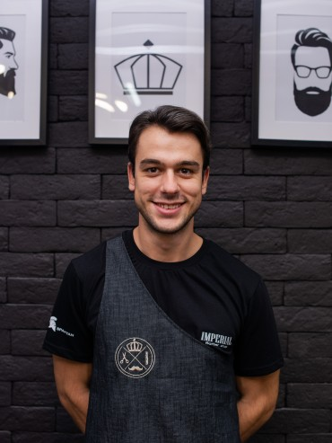
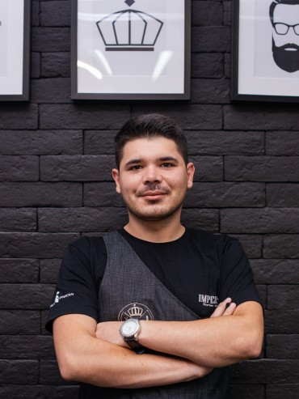
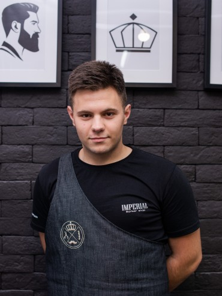

Naš tim

Majstor Bata
Majstor Bata ili Batavaža. Voleo bi da bude zvezda granda. Voli da peva. Loži se na turbo punk, voli svog psa Ajru više od svega. Specijalnosti : Trimovanje brade, šišanje, brijanje.

Majstor Karlo
Majstor Karlo ili samo Deda. Nije najstariji ali tako izgleda. Preko zime deci raznosi poklone, porodičan čovek. Specijalnosti : Trimovanje brade, šišanje..

Ana
Ana je još od malih nogu znala da će postati frizer. Školu za Negu lepote – smer muški frizer, završila je 1999 godine, a 2001. se usavršava kod Ratka Šobote.

Majstor Milanče
Majstor Milanče ili samo ČE. Bio je hipster i pre nego je saznao da je taj. Loži se na zanate, porodičan čovek. Specijalnosti : Trimovanje brade, šišanje, brijanje.